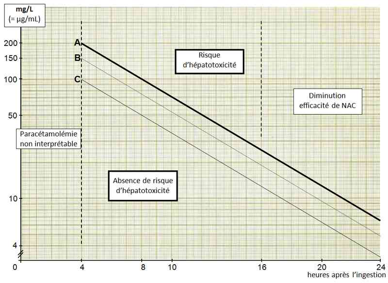
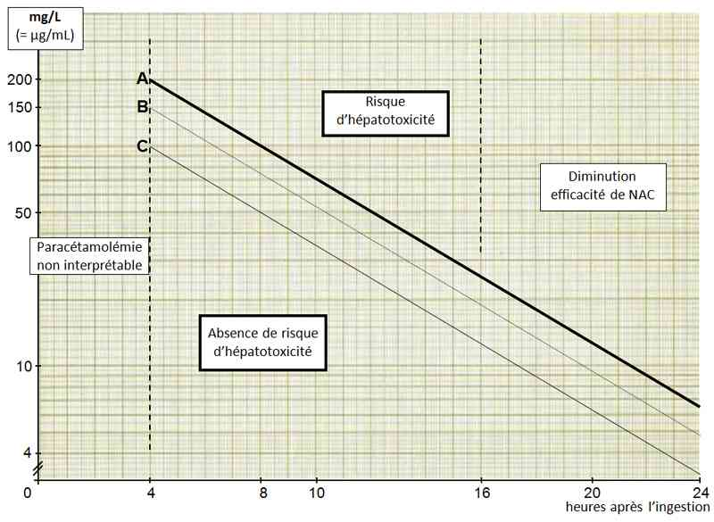
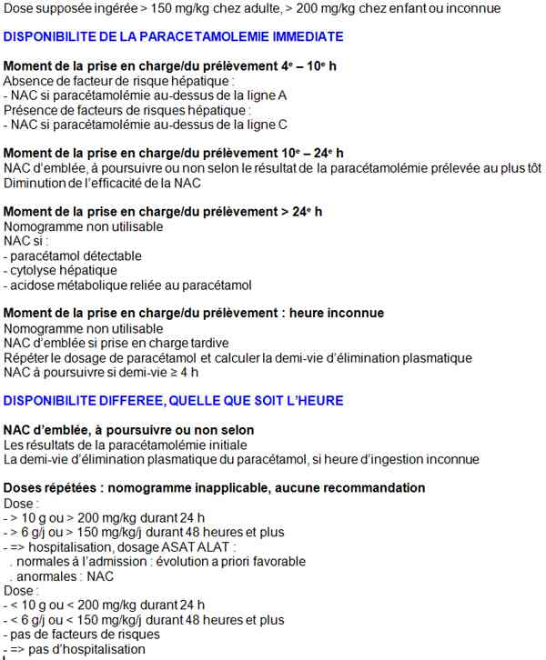

Bienvenue Sur Medical Education
Intoxication : paracétamol
Spécialité : pediatrie / toxicologie /
Points importants
-
Intoxication fréquente (1ère molécule en cause : 10% des intoxications volontaires)
-
Risque d'hépatite cytolytique aiguë, dose-dépendante, qui peut conduire au décès
-
Hospitalisation et paracétamolémie pour une dose supposée ingérée :
-
> 200 mg/kg chez l'enfant
-
> 150 mg/kg chez l'adulte
-
Administration de N-acétylcystéine (NAC) dans les 8-10h post-ingestion :
-
selon le résultat de la paracétamolémie (nomogramme de Rumack & Matthew, ligne A)
-

_777
Nomogramme de Rumack et Matthew
-
d'emblée si la dose ingérée est élevée ou inconnue lors d'une prise en charge tardive, voire d'une heure de prise inconnue ou de l'impossibilité de disposer en urgence de la paracétamolémie
-
En présence de facteurs de risque, hospitalisation pour une dose supposée ingérée de 125 mg/kg, paracétamolémie à interpréter selon la ligne C du nomogramme de Rumack & Matthew
-
Administration de la dose de charge de NAC du protocole IV en 1h (au lieu de 15 min) pour éviter toute réaction anaphylactoïde
Présentation clinique / CIMU
SIGNES FONCTIONNELS
- > 200 mg/kg chez l'enfant
- > 150 mg/kg chez l'adulte
-
selon le résultat de la paracétamolémie (nomogramme de Rumack & Matthew, ligne A)
-  _777 Nomogramme de Rumack et Matthew
- d'emblée si la dose ingérée est élevée ou inconnue lors d'une prise en charge tardive, voire d'une heure de prise inconnue ou de l'impossibilité de disposer en urgence de la paracétamolémie
Présentation clinique / CIMU
SIGNES FONCTIONNELS
Généraux
Pauvreté des symptômes à la phase initiale de l'intoxication isolée
- Anorexie
- Nausées, vomissements
- Douleurs abdominales
Spécifiques
- Douleurs de l'hypochondre droit (signes d'hépatite cytolytique)
CONTEXTE
Terrain
- Moins grande sensibilité des enfants (dose toxique 200 mg/Kg, versus 150 mg/Kg pour l'adulte)
Traitement usuel
- Inducteur enzymatique du cytochrome 2E1 (phénobarbital, isoniazide, éthylisme chronique)
Antécédents
- Hépatopathie
Facteurs de risque
- Dénutrition
- Ethylisme chronique
-
Inducteurs du cyp2E1 (utiliser la ligne C du nomogramme de Rumack & Matthew)
- _777 Nomogramme de Rumack et Matthew
Circonstances de survenue
- Intoxication volontaire
- Intoxication accidentelle de l'enfant
- Erreur thérapeutique (répétition forte dose chez l'enfant)
- Automédication (surdosage lors d'algies dentaires par exemple)
EXAMEN CLINIQUE
- Faire préciser l'heure de l'ingestion
-
Signes d'hépatite débutante :
- subictère conjonctival, ictère
- sensibilité de l'hypochondre droit à la palpation
-
Signes d'insuffisance hépatocellulaire :
- encéphalopathie : astérixis, troubles de conscience
- Savoir évoquer la prise de paracétamol devant un syndrome d'intoxication par opiacés
CIMU
- Tri 2 à 3 selon la gravité
Signes paracliniques
BIOLOGIQUE
ASAT, ALAT (augmentation à partir de H12), bilirubine, TP, créatinine
- A l'admission
- 12 heures après
- Les jours suivants si hépatite
Dans les formes graves
- Troubles de l'hémostase, CIVD
- Insuffisance rénale (nécrose tubulaire possible)
- Acidose lactique
- Pancréatite aiguë
ANALYTIQUES
Paracétamolémie
- Intérêt diagnostique et pronostique
- 100 mg/L = 0,66 mmol/L ; 0,1 mmol/L = 15,15 mg/L
- Prélevée après H+4 après ingestion, interprétable sur le nomogramme de Rumack & Matthew de H4 jusqu'à H20
Nomogramme de Rumack & Matthew adapté
_777 Nomogramme de Rumack et Matthew
-
Echelle semi-logarithmique :
- ligne A (200 mg/L à H4) : ligne de traitement si absence de facteur de risque
- ligne C (100 mg/L à H4) : ligne de traitement si présence de facteurs de risque
- ligne B (150 mg/L à H4) : peu utilisé en France, prise en compte d'incertitudes (heure d'ingestion...)
-
Nomogramme non interprétable si :
- répétition de doses supra thérapeutiques de paracétamol
- répétition rapprochées d'ingestion aiguë
- forme à libération prolongée (non disponible en France)
- délai ingestion - paracétamolémie > 24h
Calcul de la demi-vie
- 2e prélèvement de paracétamolémie (C2) H+4 après le 1er prélèvement (C1) : alors demi-vie > 4 heures (= atteinte hépatique) si C2 > 0,5xC1
- Répétition de la paracétamolémie (C2) à tout moment (T2) : calcul de la demi-vie = [(T2-T1).log2] / [logC1-logC2]
Savoir évoquer une intoxication par paracétamol devant la présence de
- Opiacés positifs
- Tramadol ou codéine positif (paracétamol possiblement associé)
- Dextropropoxyphène positif (paracétamol systématiquement associé)
Diagnostic différentiel
-
En deuxième intention (sanction thérapeutique immédiate : NAC) :
-
hépatite alcoolique
-
hépatite virale
-
autres hépatites toxiques
Traitement
TRAITEMENT PREHOSPITALIER / INTRAHOSPITALIER
-
Si le paracétamol est ingéré seul
- hépatite alcoolique
- hépatite virale
- autres hépatites toxiques
Traitement
TRAITEMENT PREHOSPITALIER / INTRAHOSPITALIER
- Si le paracétamol est ingéré seul
Aucun traitement ne s'impose en préhospitalier
- NAC non indispensable
- Pas de recommandation pour le charbon activé
- Transport non médicalisé suffisant
Stabilisation initiale
- Lavage gastrique sans intérêt
-
Charbon activé :
- dose de 50 g (1 g/Kg chez l'enfant)
- dans les 1 à 2 heures après l'ingestion ; inutile après
- chez un patient conscient et sans trouble de la déglutition
- administration de charbon activé avant le protocole oral de NAC sans conséquence clinique
-
N-acétylcystéine (NAC) indiquée :
-
si paracétamolémie :
- au-dessus la ligne A du nomogramme de Rumack & Matthew
- au-dessus de la ligne C en présence de facteurs de risque
-
d'emblée si :
- heure de l'ingestion inconnue avec dose ingérée > dose toxique ou inconnue
- prise en charge tardive
- paracétamolémie non disponible
-
voie intraveineuse :
- indiquée en cas de vomissements
- 300 mg/kg en 20h : 150 mg/kg dans 250 mL de glucosé à 5% en 1 h (risque de réaction anaphylactoïde si débit plus rapide), puis 50 mg/kg dans 500 mL de glucosé à 5% en 4h, puis 100 mg/kg dans 1000 mL de glucosé à 5% en 16h
- les volumes sont à adapter en fonction du poids corporel chez l'enfant
- assez systématique du fait de l'absence d'intolérance digestive, de l'acceptabilité de la perfusion, de la durée du protocole, de l'AMM
- risque de réaction anaphylactoïde
-
voie orale (1330 mg/kg en 72h) :
- 140 mg/kg (dose de charge)
- puis 70 mg/kg toutes les 4h, 17 fois
- risque d'intolérance digestive
-
NAC indiquée :
- au mieux dans les 8-10h après l'ingestion, à la phase initiale, souvent asymptomatique de l'intoxication
- au-delà (10-20h) : risque d'atteinte hépatique augmenté
- après 24h : NAC incapable de prévenir l'atteinte hépatique (jusqu'à la 36ème h : NAC diminue la gravité de l'atteinte hépatique)
-
si paracétamolémie :
Suivi du traitement
-
Arrêt de la NAC débutée d'emblée selon la paracétamolémie prélevée à l'admission située :
- sous la ligne de traitement
- ou selon la demi-vie (< 4 heures)
-
Risque de réaction anaphylactoïde dose dépendante liée à la vitesse de perfusion de NAC trop élevée :
-
modérée :
- flush
- rash
- prurit
- poursuite du traitement : Réduction de la vitesse de perfusion/Antihistaminiques H1
-
sévère :
- urticaire
- bronchospasme
- HoTA
- choc anaphylactique
- poursuite du traitement après réévaluation du bénéfice / risque, selon la réponse clinique à l'arrêt de la perfusion et à l'administration d'antihistaminique H1
-
dans les formes graves (hépatite aiguë, atteinte rénale, acidose lactique reliée au paracétamol) :
- poursuite de la NAC en perfusion continue de 300 mg/kg/j jusqu'à disparition du paracétamol
-
modérée :
MEDICAMENTS
N-acétylcystéine (NAC)
-
Voie intraveineuse :
- Fluimucil® 5 g/25 mL : solution injectable pour perfusion, 5 g / ampoule
- seule spécialité avec AMM pour cette indication
-
Voie orale (tous hors AMM) :
- granulé / poudre pour solution buvable, sachet de 200 mg : Exomuc®, Fluimucil®, Mucospire®, Solmucol®, Mucomyst®, Mucolator®, Mucomyst® (hors AMM)
- poudre pour solution buvable, flacon de plusieurs grammes : Mucomyst® 200 mg/5 mL (4,8 g par flacon), Solmucol® 2,5% (6 g / flacon) : le flacon de Mucomyst® 200 mg/5 mL correspond à la dose « 4h » d'un adulte de 65-70 kg
- solution pour installation endotrachéobronchique : Mucomyst® 1 g/5 mL, 1 g / ampoule, avec soda, jus de fruit
Charbon activé
- Carbomix® (50 g, granulé pour suspension buvable, flacon de 500 mL)
- Toxicarb® (suspension buvable, 20 g/100 mL, flacon de 60 et 250 mL)
Surveillance
CLINIQUE
Signes d'hépatite
- Ictère
- Hépatalgie
Signes d'insuffisance hépatocellulaire
- Astérixis
- Troubles digestifs
- Troubles de conscience
Réaction anaphylactoïde liée à la vitesse de perfusion de NAC trop élevée
PARACLINIQUE
- Insuffisance hépatocellulaire à partir du 3ème jour : TP, facteur V, ammoniémie, glycémie
Devenir / orientation
Transport non médicalisé si intoxication par paracétamol seul
CRITERES D'ADMISSION
- Absence de symptôme dans les heures qui suivent l'ingestion, prédictif ni de la bénignité ni de la gravité de l'intoxication
- Hospitalisation pour évaluation de la paracétamolémie et antidote le cas échéant
-
Hépatite fulminante :
-
prise en charge conventionnelle :
- transfert vers réanimation proche d'une unité de transplantation
-
prise en charge conventionnelle :
-
Réunir les facteurs pronostiques de l'irréversibilité de l'atteinte hépatique :
- diminution TP et facteur V < 10% + lactates > 3,5 mmol/L
- pH artériel < 7,3 ou durant une période de 24 h : TP < 10% (INR > 6,5) + créatininémie > 300 µmol/L + encéphalopathie stade 3 ou 4
-
encéphalopathie stade 2 ou 3 :
- + facteur V < 30% chez les plus de 30 ans
- + facteur V < 20% chez les moins de 30 ans (critères de Clichy)
CRITERES DE SORTIE
_777 Nomogramme de Rumack et Matthew
-
Paracétamolémie en-dessous de :
- la ligne A si l'heure d'ingestion est connue avec précision en l'absence de facteur de risque
- la ligne B si l'heure d'ingestion est peu précise en l'absence de facteur de risque
- la ligne C si présence de facteurs de risque
- ASAT / ALAT normale à la 36e heure
Mécanisme / description
METABOLISME
A dose thérapeutique
- Résorption digestive rapide (pic plasmatique 30-60 min)
- Métabolisme hépatique
- Demi-vie d'élimination plasmatique de 2 heures environ
A dose élevée
- Pic plasmatique retardé jusqu'à 4ème après l'ingestion (paracétamolémie à partir de H4)
- Demi-vie > ou égale à 4 heures traduit une atteinte hépatique
PHARMACODYNAMIE
- NAPQI (N-acétyl-p-benzo-quinone-imine) métabolite toxique formé par le cytochrome P450 2E1, responsable de l'hépatite cytolytique par nécrose centrolobulaire
- A dose thérapeutique : NAPQI conjugué au glutathion (GSH), éliminée sous forme de dérivés consommant la cystéine
- A dose élevée : consommation de cystéine ce qui ne permet plus la régénération du GSH : capacités de détoxication débordées
- NAC apporte de la cystéine qui restaure le stock de GSH
-
Facteurs de risque :
- déplétion en glutathion
- inducteur enzymatique des métabolites toxiques
Algorithme
-
Algorithme : intoxication au paracétamol
 _776 Algorithme Algorithme : intoxication au paracétamol
Bibliographie
-
Wolf SJ, Heard K, Sloan EP et al. Clinical policy: critical issues in the management of patients presenting to the emergency department with acetaminophen overdose. Ann Emerg Med 2007;50:292-313.
-
Dart RC, Erdman AR, Olson KR et al. Acetaminophen poisoning: an evidence-based consensus guideline for out-of-hospital management. Clin Toxicol 2006;44:1-18.
-
Testud F, Descotes J. Pour un usage rationnel de la N-acétylcystéine dans les intoxications aiguës par le paracétamol. JEUR 2003;16:74-9.
-
Hantson P, Bédry R. Les antidotes. Réanimation 2006;15:383-9.
-
Rumack BH. Acetaminophen hepatotoxicity: the first 35 years. J Toxicol Clin Toxicol 2002;40:3-20.
-
Harrison PM, Keays R, Bray GP, Alexander GJ, Williams R. Improved outcome of paracetamol-induced fulminant hepatic failure by late administration of acetylcysteine. Lancet 1990;335:1572-3.
-
Bernal W, Donaldson N, Wyncoll D, Wendon J. Blood lactate as an early predictor of outcome in paracetamol-induced acute liver failure: a cohort study. Lancet 2002;359:558-63.
Auteur(s) : Philippe SAVIUC